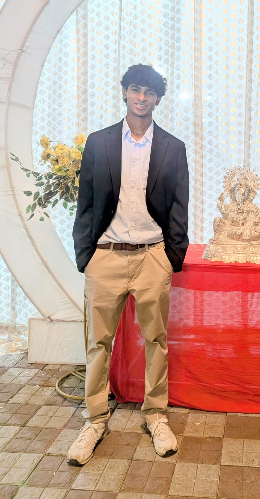

Aryan Vyahalkar
Welcome!
Hi, I'm Aryan!
I'm a student-athlete and programmer interested in computer science, applied mathematics and statistics, and quantitative finance.

Education
- 2023 - 2025: High School Diploma @ Wake Early College of Information & Biotechnologies
- 2023 - 2025: A.A.S as dually-enrolled high school student @ Wake Technical Community College
Projects
- haradaAI – AI-powered tool that breaks goals into an 1–8–64 structure following the renowned Harada Method 🔗.
- MyNCRep – civic-information tool that helps NC voters learn about the voting process.
- VoiceCode – voice-controlled coding assistant that lets your voice handle the heavy lifting instead of the keyboard.
- Fruit Ninja – computer vision / machine learning version of Fruit Ninja using your thumb and index finger.
-
Object Detector
– real-time object detection system using
YOLOv8that identifies 80+ classes through your webcam.
Bio
Hello! I'm Aryan. I'm a former US student-athlete who moved to India in November of 2025. I'm currently on a pause from any long-term coding / web development projects because I'm preparing for my first JEE attempt in 2028.
Misc.
LinkedInResume
GitHub
Email: aryan.x.vyahalkar@gmail.com
I'm open-sourcing and sharing my journey in quantitative finance. Here's the GitHub repository where I'll be uploading my projects.